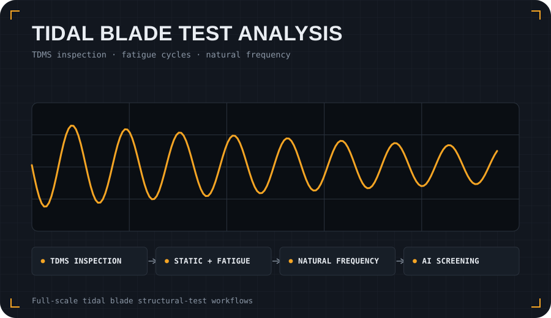

Problem
Full-scale blade tests produce large, heterogeneous sensor datasets. Analysis needs to summarise channel inventories, static response, frequency content, fatigue cycles and actuator/load behaviour without exposing private TDMS files or test logs.
Approach
- Inspect TDMS channels and summarise timing/channel metadata.
- Process static load-displacement relationships and actuator/root-bending-moment checks.
- Extract fatigue-cycle peak/trough summaries from synthetic or processed public-safe signals.
- Provide natural-frequency and damping helpers for vibration/free-decay examples.
- Include applied-AI screening as prioritisation support, not confirmed damage labelling.
What it demonstrates
This project shows engineering-analysis depth: structural-test processing, sensor QA/QC, natural-frequency helpers, fatigue-cycle summaries, documentation, tests, synthetic examples and clear confidentiality boundaries.
git clone https://github.com/sergioald/tidal-blade-test-analysis.git
cd tidal-blade-test-analysis
python -m pip install -e ".[dev]"
python -m pytest
python examples/synthetic_static_demo.py
cd tidal-blade-test-analysis
python -m pip install -e ".[dev]"
python -m pytest
python examples/synthetic_static_demo.py